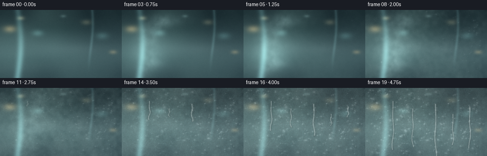
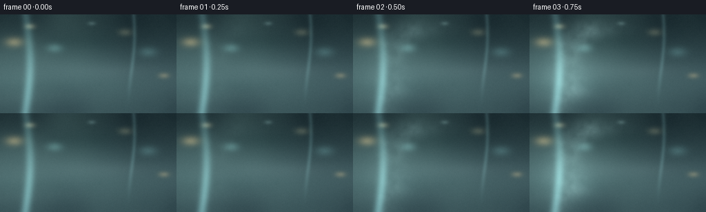
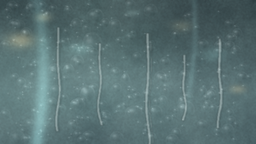
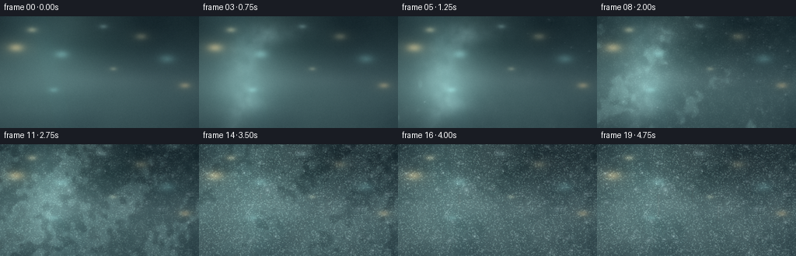
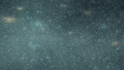

CODING AGENTS AS PIXEL WORLD MODELS
traex/DeepSeek-V4.1-Flash · phygen_101
点击播放 · 原生 RGB 像素
逐轮保存的候选
回放视频、检查图与代码变化。
每份候选均可单独播放。实际图片检查记录在下方工具轨迹中。
候选 01播放与检查图
点击播放 · 原生 RGB 像素


展开代码变化
--- 上一保存版本
+++ 本次保存版本
@@ -0,0 +1,320 @@
+from pathlib import Path
+
+import cv2
+import numpy as np
+from PIL import Image, ImageDraw, ImageFilter
+from scipy.ndimage import gaussian_filter
+
+import artifact_io
+
+
+CASE_DIR = Path(__file__).resolve().parent
+WIDTH, HEIGHT = 256, 144
+FRAMES = 20
+FPS = 4.0
+SS = 2
+H, W = HEIGHT * SS, WIDTH * SS
+RNG = np.random.default_rng(41017)
+
+
+def smoothstep(edge0, edge1, value):
+ x = np.clip((value - edge0) / (edge1 - edge0), 0.0, 1.0)
+ return x * x * (3.0 - 2.0 * x)
+
+
+def normalize(array):
+ lo, hi = np.percentile(array, 1.0), np.percentile(array, 99.0)
+ return np.clip((array - lo) / max(hi - lo, 1e-6), 0.0, 1.0)
+
+
+def mix(a, b, amount):
+ return a * (1.0 - amount[..., None]) + b * amount[..., None]
+
+
+def make_background():
+ y, x = np.mgrid[0:H, 0:W].astype(np.float32)
+ xn, yn = x / (W - 1), y / (H - 1)
+
+ top = np.array([31, 49, 53], dtype=np.float32)
+ middle = np.array([67, 94, 98], dtype=np.float32)
+ bottom = np.array([45, 67, 73], dtype=np.float32)
+ vertical = smoothstep(0.02, 0.72, yn)
+ image = mix(np.broadcast_to(top, (H, W, 3)).copy(),
+ np.broadcast_to(middle, (H, W, 3)).copy(), vertical)
+ lower = smoothstep(0.64, 1.0, yn)
+ image = mix(image, np.broadcast_to(bottom, (H, W, 3)).copy(), lower * 0.72)
+
+ broad = normalize(gaussian_filter(RNG.normal(size=(H, W)), 34.0))
+ image += (broad[..., None] - 0.5) * np.array([13, 17, 15], dtype=np.float32)
+ left_glow = np.exp(-(((xn - 0.22) / 0.43) ** 2 + ((yn - 0.43) / 0.52) ** 2))
+ image += left_glow[..., None] * np.array([17, 22, 20], dtype=np.float32)
+
+ # Soft city lights and reflected interior lamps behind the wet glass.
+ light = np.zeros((H, W, 3), dtype=np.float32)
+ lights = [
+ (0.08, 0.28, 0.050, (211, 153, 83), 0.34),
+ (0.17, 0.12, 0.030, (225, 190, 132), 0.24),
+ (0.31, 0.34, 0.044, (113, 166, 161), 0.23),
+ (0.71, 0.18, 0.038, (194, 167, 116), 0.19),
+ (0.84, 0.38, 0.050, (101, 151, 148), 0.20),
+ (0.93, 0.62, 0.030, (225, 156, 81), 0.20),
+ (0.52, 0.09, 0.022, (172, 204, 197), 0.15),
+ ]
+ for cx, cy, sigma, color, strength in lights:
+ spot = np.exp(-(((xn - cx) / sigma) ** 2 + ((yn - cy) / sigma) ** 2))
+ light += spot[..., None] * np.array(color, dtype=np.float32) * strength
+ image += light
+
+ # Out-of-focus panes outside, kept very low contrast.
+ for cx, cy, width, height, value in [
+ (0.48, 0.28, 0.24, 0.12, -8),
+ (0.63, 0.57, 0.32, 0.08, 7),
+ (0.18, 0.73, 0.38, 0.09, -5),
+ ]:
+ band = np.exp(-(((xn - cx) / width) ** 2 + ((yn - cy) / height) ** 2))
+ image += band[..., None] * value
+
+ # Cool reflected window strip and faint room highlights on the glass.
+ strip1 = np.exp(-((xn - 0.145 - 0.025 * np.sin(yn * 3.2)) / 0.027) ** 2)
+ strip1 *= (0.52 + 0.48 * smoothstep(0.05, 0.95, yn))
+ strip2 = np.exp(-((xn - 0.745 - 0.018 * np.sin(yn * 4.0 + 0.8)) / 0.012) ** 2)
+ strip2 *= smoothstep(0.04, 0.55, 1.0 - yn) * 0.44
+ image += strip1[..., None] * np.array([45, 66, 66], dtype=np.float32)
+ image += strip2[..., None] * np.array([42, 58, 58], dtype=np.float32)
+
+ # A very subtle glass grain prevents the background from looking like flat air.
+ grain = gaussian_filter(RNG.normal(size=(H, W)), 0.7)
+ image += grain[..., None] * 2.3
+ return np.clip(image, 0, 255)
+
+
+def make_fields():
+ y, x = np.mgrid[0:H, 0:W].astype(np.float32)
+ xn, yn = x / (W - 1), y / (H - 1)
+ fine = normalize(gaussian_filter(RNG.normal(size=(H, W)), 1.35))
+ medium = normalize(gaussian_filter(RNG.normal(size=(H, W)), 6.0))
+ coarse = normalize(gaussian_filter(RNG.normal(size=(H, W)), 23.0))
+ wisps = normalize(gaussian_filter(RNG.normal(size=(H, W)), 10.0))
+ wisps = normalize(wisps * 0.72 + normalize(gaussian_filter(RNG.normal(size=(H, W)), 3.2)) * 0.28)
+
+ # Fine dew prefers the cool lower and left portions before spreading across the pane.
+ front_shape = 0.50 * (1.0 - xn) + 0.30 * yn + 0.34 * (coarse - 0.5)
+ micro = (0.48 + 0.52 * fine) * (0.62 + 0.38 * medium)
+ return xn, yn, fine, medium, coarse, wisps, front_shape, micro
+
+
+BACKGROUND = make_background()
+XN, YN, FINE, MEDIUM, COARSE, WISPS, FRONT_SHAPE, MICRO = make_fields()
+
+
+def make_droplets():
+ count = 465
+ droplets = []
+ for _ in range(count):
+ x = RNG.uniform(0.015, 0.985)
+ y = RNG.uniform(0.02, 0.985)
+ # Fewer droplets sit in the darker top-right before the condensation front arrives.
+ rejection = RNG.random()
+ front = 0.50 * (1.0 - x) + 0.30 * y + 0.34 * (COARSE[int(y * (H - 1)), int(x * (W - 1))] - 0.5)
+ if rejection > 0.33 + 0.60 * front:
+ continue
+ birth = 0.08 + 0.76 * (0.52 * (1.0 - x) + 0.28 * y + 0.20 * RNG.random())
+ final_r = RNG.gamma(2.0, 1.12) + 0.65
+ if RNG.random() < 0.08:
+ final_r += RNG.uniform(2.0, 4.6)
+ droplets.append([
+ x * W, y * H, birth, final_r * SS, RNG.uniform(0.0, 2.0 * np.pi),
+ RNG.uniform(0.86, 1.10), RNG.uniform(0.82, 1.12)
+ ])
+ return np.asarray(droplets, dtype=np.float32)
+
+
+DROPLETS = make_droplets()
+
+
+def add_vapor(image, t):
+ # A slow, humid breath enters low on the left, folds upward, then deposits.
+ y, x = np.mgrid[0:H, 0:W].astype(np.float32)
+ xn, yn = x / (W - 1), y / (H - 1)
+ opacity = smoothstep(0.02, 0.15, t) * (1.0 - smoothstep(0.48, 0.80, t))
+ if opacity <= 0:
+ return image
+
+ center = 0.10 + 0.16 * (1.0 - yn) + 0.075 * np.sin(yn * 8.0 + t * 5.0)
+ center += 0.025 * np.sin(yn * 20.0 - t * 7.0)
+ width = 0.075 + 0.11 * (1.0 - yn)
+ plume = np.exp(-((xn - center) / width) ** 2)
+ plume *= smoothstep(0.05, 0.36, xn) * smoothstep(0.0, 0.20, yn)
+ plume *= 0.42 + 0.78 * WISPS
+
+ center2 = 0.18 + 0.13 * (1.0 - yn) + 0.045 * np.sin(yn * 11.0 - t * 4.5 + 0.8)
+ plume2 = np.exp(-((xn - center2) / (0.045 + 0.07 * (1.0 - yn))) ** 2)
+ plume2 *= smoothstep(0.02, 0.28, xn) * smoothstep(0.0, 0.15, yn)
+ plume2 *= 0.28 + 0.72 * MEDIUM
+ vapor = np.clip(plume * 0.66 + plume2 * 0.30, 0.0, 1.0)
+
+ vapor_color = np.array([175, 202, 198], dtype=np.float32)
+ return image + vapor[..., None] * vapor_color * (0.22 * opacity)
+
+
+def add_condensation(image, t):
+ progress = smoothstep(0.04, 0.96, t)
+ arrival = smoothstep(0.17, 0.78, t)
+ field = 0.57 * progress + 0.23 * (FRONT_SHAPE - 0.35) + 0.20 * (MEDIUM - 0.5)
+ patch = smoothstep(-0.05, 0.48, field)
+ coverage = (0.05 + 0.50 * progress) * patch
+ coverage *= 0.70 + 0.30 * smoothstep(0.1, 0.9, COARSE)
+
+ fog_color = np.array([193, 211, 208], dtype=np.float32)
+ image = image * (1.0 - coverage[..., None] * 0.42) + fog_color * coverage[..., None] * 0.42
+
+ # Dew texture: tiny bright menisci and darker interstitial film.
+ dew_contrast = arrival * (0.42 + 0.58 * patch)
+ micro_light = (MICRO - 0.55) * dew_contrast
+ image += micro_light[..., None] * np.array([24, 29, 27], dtype=np.float32)
+ image -= (FINE - 0.5)[..., None] * dew_contrast[..., None] * np.array([4, 3, 2], dtype=np.float32)
+
+ # A few soft pale blooms show thicker vapor landing before the fine dew spreads.
+ bloom = np.exp(-(((XN - 0.20 - 0.035 * np.sin(t * 4.0)) / 0.16) ** 2 +
+ ((YN - 0.64) / 0.27) ** 2))
+ bloom *= (1.0 - smoothstep(0.28, 0.66, t)) * smoothstep(0.05, 0.22, t)
+ image += bloom[..., None] * np.array([34, 44, 42], dtype=np.float32)
+ return image
+
+
+def droplet_sprite(radius, squash_x, squash_y):
+ pad = int(np.ceil(radius * 1.75)) + 3
+ yy, xx = np.mgrid[-pad:pad + 1, -pad:pad + 1].astype(np.float32)
+ xx = xx / squash_x
+ yy = yy / squash_y
+ rr = np.sqrt(xx * xx + yy * yy)
+ shape = np.clip((radius + 0.7 - rr) / 1.35, 0.0, 1.0)
+ shape = shape * shape * (3.0 - 2.0 * shape)
+ nx, ny = xx / max(radius, 0.1), yy / max(radius, 0.1)
+ highlight = np.exp(-(((nx + 0.30) / 0.31) ** 2 + ((ny + 0.35) / 0.25) ** 2))
+ lower_shadow = np.exp(-(((nx - 0.28) / 0.38) ** 2 + ((ny - 0.35) / 0.30) ** 2))
+ rim = np.exp(-((rr / max(radius, 0.1) - 0.90) / 0.105) ** 2)
+ rim *= smoothstep(-0.7, 0.4, -ny)
+ lens = 7.0 * (1.0 - rr / max(radius, 0.1)) - 9.0 * lower_shadow
+ lens += 32.0 * highlight + 8.0 * rim
+ return shape, lens
+
+
+def composite_droplet(image, x, y, radius, opacity, squash_x, squash_y):
+ shape, lens = droplet_sprite(radius, squash_x, squash_y)
+ pad_y, pad_x = shape.shape[0] // 2, shape.shape[1] // 2
+ cx, cy = int(round(x)), int(round(y))
+ x0, x1 = cx - pad_x, cx + pad_x + 1
+ y0, y1 = cy - pad_y, cy + pad_y + 1
+ if x1 <= 0 or y1 <= 0 or x0 >= W or y0 >= H:
+ return
+ sx0, sy0 = max(0, -x0), max(0, -y0)
+ dx0, dy0 = max(0, x0), max(0, y0)
+ dx1, dy1 = min(W, x1), min(H, y1)
+ sx1 = sx0 + dx1 - dx0
+ sy1 = sy0 + dy1 - dy0
+ local_shape = shape[sy0:sy1, sx0:sx1, None] * opacity
+ local_lens = lens[sy0:sy1, sx0:sx1, None]
+ image[dy0:dy1, dx0:dx1] += local_shape * local_lens
+
+
+def add_runner_trails(image, t):
+ overlay = Image.new("RGBA", (W, H), (0, 0, 0, 0))
+ draw = ImageDraw.Draw(overlay)
+ runners = [
+ (0.23, 0.19, 0.48, 0.72, 0.030),
+ (0.39, 0.30, 0.61, 0.57, 0.023),
+ (0.58, 0.23, 0.54, 0.84, 0.034),
+ (0.72, 0.38, 0.69, 0.46, 0.019),
+ (0.86, 0.27, 0.75, 0.62, 0.025),
+ ]
+ for x, y0, start, distance, width in runners:
+ if t <= start:
+ continue
+ u = np.clip((t - start) / max(1.0 - start, 1e-4), 0.0, 1.0)
+ end_y = y0 + distance * (u ** 1.35)
+ points = []
+ for step in range(18):
+ v = step / 17.0
+ yy = y0 + (end_y - y0) * v
+ xx = x + 0.009 * np.sin(v * 10.0 + x * 9.0) * v
+ points.append((xx * W, yy * H))
+ alpha = int(100 * min(1.0, u * 2.8))
+ draw.line(points, fill=(221, 233, 231, alpha), width=max(2, int(width * W * 0.58)),
+ joint="curve")
+ draw.line([(px + 1.3 * SS, py) for px, py in points],
+ fill=(23, 40, 43, alpha // 3), width=max(1, int(width * W * 0.22)),
+ joint="curve")
+ overlay = overlay.filter(ImageFilter.GaussianBlur(0.65 * SS))
+ base = Image.fromarray(np.clip(image, 0, 255).astype(np.uint8)).convert("RGBA")
+ return Image.alpha_composite(base, overlay).convert("RGB")
+
+
+def render_frame(index):
+ t = index / (FRAMES - 1)
+ image = BACKGROUND.copy()
+ image = add_vapor(image, t)
+ image = add_condensation(image, t)
+
+ image = np.asarray(add_runner_trails(image, t), dtype=np.float32)
+
+ for x, y, birth, final_r, phase, sx, sy in DROPLETS:
+ age = t - birth
+ if age < 0:
+ continue
+ growth = 1.0 - np.exp(-age * 5.3)
+ radius = (0.65 * SS + final_r * 0.32) + final_r * 0.68 * growth
+ wobble = 1.0 + 0.07 * np.sin(phase + age * 2.0)
+ opacity = min(0.88, 0.24 + age * 1.65) * smoothstep(0.0, 0.08, age)
+ composite_droplet(image, x, y, radius * wobble, opacity, sx, sy)
+
+ # Large beads grow where the vapor front first becomes heavy.
+ for cx, cy, birth, radius in [
+ (0.135, 0.77, 0.35, 3.6),
+ (0.215, 0.55, 0.44, 2.8),
+ (0.305, 0.82, 0.49, 3.0),
+ (0.505, 0.68, 0.56, 2.5),
+ (0.675, 0.81, 0.60, 2.8),
+ (0.795, 0.60, 0.64, 2.2),
+ (0.915, 0.72, 0.68, 2.5),
+ ]:
+ age = t - birth
+ if age >= 0:
+ r = radius * SS * (0.58 + 0.42 * (1.0 - np.exp(-age * 4.0)))
+ composite_droplet(image, cx * W, cy * H, r, 0.88, 0.92, 1.10)
+
+ # Glass reflections pass over the droplets and keep the pane in front of the scene.
+ reflection = 0.022 * np.exp(-((XN - 0.145 - 0.025 * np.sin(YN * 3.2)) / 0.025) ** 2)
+ image += reflection[..., None] * np.array([95, 122, 119], dtype=np.float32)
+
+ vignette = 1.0 - 0.32 * (smoothstep(0.64, 1.15, np.sqrt((XN - 0.49) ** 2 + (YN - 0.49) ** 2)) ** 1.6)
+ image *= vignette[..., None]
+ return np.clip(image, 0, 255).astype(np.uint8)
+
+
+def main():
+ frames_hi = [render_frame(i) for i in range(FRAMES)]
+ frames = []
+ for frame in frames_hi:
+ small = Image.fromarray(frame).resize((WIDTH, HEIGHT), Image.Resampling.LANCZOS)
+ small = small.filter(ImageFilter.UnsharpMask(radius=0.45, percent=55, threshold=2))
+ frames.append(np.asarray(small, dtype=np.uint8))
+ frames = np.stack(frames)
+
+ artifact_io.save(frames, CASE_DIR)
+
+ writer = cv2.VideoWriter(
+ str(CASE_DIR / "video.mp4"),
+ cv2.VideoWriter_fourcc(*"mp4v"),
+ FPS,
+ (WIDTH, HEIGHT),
+ )
+ if not writer.isOpened():
+ raise RuntimeError("Could not open MP4 video writer")
+ for frame in frames:
+ writer.write(cv2.cvtColor(frame, cv2.COLOR_RGB2BGR))
+ writer.release()
+
+
+if __name__ == "__main__":
+ main()
候选 02播放与检查图
点击播放 · 原生 RGB 像素

展开代码变化
--- 上一保存版本
+++ 本次保存版本
@@ -35,9 +35,9 @@
y, x = np.mgrid[0:H, 0:W].astype(np.float32)
xn, yn = x / (W - 1), y / (H - 1)
- top = np.array([31, 49, 53], dtype=np.float32)
- middle = np.array([67, 94, 98], dtype=np.float32)
- bottom = np.array([45, 67, 73], dtype=np.float32)
+ top = np.array([27, 45, 50], dtype=np.float32)
+ middle = np.array([61, 87, 91], dtype=np.float32)
+ bottom = np.array([39, 61, 67], dtype=np.float32)
vertical = smoothstep(0.02, 0.72, yn)
image = mix(np.broadcast_to(top, (H, W, 3)).copy(),
np.broadcast_to(middle, (H, W, 3)).copy(), vertical)
@@ -49,20 +49,25 @@
left_glow = np.exp(-(((xn - 0.22) / 0.43) ** 2 + ((yn - 0.43) / 0.52) ** 2))
image += left_glow[..., None] * np.array([17, 22, 20], dtype=np.float32)
- # Soft city lights and reflected interior lamps behind the wet glass.
+ # Soft reflected lamps and out-of-focus city colors behind the wet glass.
light = np.zeros((H, W, 3), dtype=np.float32)
lights = [
- (0.08, 0.28, 0.050, (211, 153, 83), 0.34),
- (0.17, 0.12, 0.030, (225, 190, 132), 0.24),
- (0.31, 0.34, 0.044, (113, 166, 161), 0.23),
- (0.71, 0.18, 0.038, (194, 167, 116), 0.19),
- (0.84, 0.38, 0.050, (101, 151, 148), 0.20),
- (0.93, 0.62, 0.030, (225, 156, 81), 0.20),
- (0.52, 0.09, 0.022, (172, 204, 197), 0.15),
+ (0.08, 0.28, 0.036, (211, 153, 83), 0.44),
+ (0.16, 0.12, 0.023, (225, 190, 132), 0.30),
+ (0.31, 0.34, 0.032, (113, 166, 161), 0.30),
+ (0.71, 0.18, 0.028, (194, 167, 116), 0.25),
+ (0.84, 0.38, 0.036, (101, 151, 148), 0.26),
+ (0.93, 0.62, 0.024, (225, 156, 81), 0.27),
+ (0.52, 0.09, 0.018, (172, 204, 197), 0.21),
+ (0.57, 0.47, 0.015, (213, 182, 128), 0.20),
+ (0.27, 0.66, 0.021, (104, 159, 153), 0.20),
]
for cx, cy, sigma, color, strength in lights:
spot = np.exp(-(((xn - cx) / sigma) ** 2 + ((yn - cy) / sigma) ** 2))
- light += spot[..., None] * np.array(color, dtype=np.float32) * strength
+ # A slightly softer outer halo makes the lights feel optically defocused.
+ halo = np.exp(-(((xn - cx) / (sigma * 2.25)) ** 2 +
+ ((yn - cy) / (sigma * 2.25)) ** 2))
+ light += (spot * 0.78 + halo * 0.22)[..., None] * np.array(color, dtype=np.float32) * strength
image += light
# Out-of-focus panes outside, kept very low contrast.
@@ -74,13 +79,10 @@
band = np.exp(-(((xn - cx) / width) ** 2 + ((yn - cy) / height) ** 2))
image += band[..., None] * value
- # Cool reflected window strip and faint room highlights on the glass.
- strip1 = np.exp(-((xn - 0.145 - 0.025 * np.sin(yn * 3.2)) / 0.027) ** 2)
- strip1 *= (0.52 + 0.48 * smoothstep(0.05, 0.95, yn))
- strip2 = np.exp(-((xn - 0.745 - 0.018 * np.sin(yn * 4.0 + 0.8)) / 0.012) ** 2)
- strip2 *= smoothstep(0.04, 0.55, 1.0 - yn) * 0.44
- image += strip1[..., None] * np.array([45, 66, 66], dtype=np.float32)
- image += strip2[..., None] * np.array([42, 58, 58], dtype=np.float32)
+ # A broad, low-contrast reflection gives the pane depth without reading as a seam.
+ sheen = np.exp(-((xn - 0.18 - 0.16 * yn) / 0.17) ** 2)
+ sheen *= 0.42 + 0.58 * smoothstep(0.0, 0.95, 1.0 - yn)
+ image += sheen[..., None] * np.array([17, 24, 23], dtype=np.float32)
# A very subtle glass grain prevents the background from looking like flat air.
grain = gaussian_filter(RNG.normal(size=(H, W)), 0.7)
@@ -91,24 +93,27 @@
def make_fields():
y, x = np.mgrid[0:H, 0:W].astype(np.float32)
xn, yn = x / (W - 1), y / (H - 1)
- fine = normalize(gaussian_filter(RNG.normal(size=(H, W)), 1.35))
+ fine = normalize(gaussian_filter(RNG.normal(size=(H, W)), 1.15))
medium = normalize(gaussian_filter(RNG.normal(size=(H, W)), 6.0))
coarse = normalize(gaussian_filter(RNG.normal(size=(H, W)), 23.0))
wisps = normalize(gaussian_filter(RNG.normal(size=(H, W)), 10.0))
wisps = normalize(wisps * 0.72 + normalize(gaussian_filter(RNG.normal(size=(H, W)), 3.2)) * 0.28)
+ bead_noise = normalize(gaussian_filter(RNG.normal(size=(H, W)), 0.75))
+ beads = smoothstep(0.58, 0.84, bead_noise)
+ beads = gaussian_filter(beads, 0.42)
# Fine dew prefers the cool lower and left portions before spreading across the pane.
front_shape = 0.50 * (1.0 - xn) + 0.30 * yn + 0.34 * (coarse - 0.5)
micro = (0.48 + 0.52 * fine) * (0.62 + 0.38 * medium)
- return xn, yn, fine, medium, coarse, wisps, front_shape, micro
+ return xn, yn, fine, medium, coarse, wisps, front_shape, micro, beads
BACKGROUND = make_background()
-XN, YN, FINE, MEDIUM, COARSE, WISPS, FRONT_SHAPE, MICRO = make_fields()
+XN, YN, FINE, MEDIUM, COARSE, WISPS, FRONT_SHAPE, MICRO, BEADS = make_fields()
def make_droplets():
- count = 465
+ count = 340
droplets = []
for _ in range(count):
x = RNG.uniform(0.015, 0.985)
@@ -118,10 +123,10 @@
front = 0.50 * (1.0 - x) + 0.30 * y + 0.34 * (COARSE[int(y * (H - 1)), int(x * (W - 1))] - 0.5)
if rejection > 0.33 + 0.60 * front:
continue
- birth = 0.08 + 0.76 * (0.52 * (1.0 - x) + 0.28 * y + 0.20 * RNG.random())
- final_r = RNG.gamma(2.0, 1.12) + 0.65
- if RNG.random() < 0.08:
- final_r += RNG.uniform(2.0, 4.6)
+ birth = 0.03 + 0.72 * (0.52 * (1.0 - x) + 0.28 * y + 0.20 * RNG.random())
+ final_r = RNG.gamma(1.75, 1.05) + 0.60
+ if RNG.random() < 0.11:
+ final_r += RNG.uniform(2.2, 5.0)
droplets.append([
x * W, y * H, birth, final_r * SS, RNG.uniform(0.0, 2.0 * np.pi),
RNG.uniform(0.86, 1.10), RNG.uniform(0.82, 1.12)
@@ -160,19 +165,28 @@
def add_condensation(image, t):
progress = smoothstep(0.04, 0.96, t)
arrival = smoothstep(0.17, 0.78, t)
- field = 0.57 * progress + 0.23 * (FRONT_SHAPE - 0.35) + 0.20 * (MEDIUM - 0.5)
+ field = 0.50 * progress + 0.29 * (FRONT_SHAPE - 0.35) + 0.27 * (MEDIUM - 0.5)
+ field += 0.10 * np.sin(XN * 15.0 + YN * 8.0 + 0.8) * smoothstep(0.05, 0.45, t)
patch = smoothstep(-0.05, 0.48, field)
- coverage = (0.05 + 0.50 * progress) * patch
- coverage *= 0.70 + 0.30 * smoothstep(0.1, 0.9, COARSE)
+ coverage = (0.04 + 0.47 * progress) * patch
+ coverage *= 0.60 + 0.40 * smoothstep(0.1, 0.9, COARSE)
+ coverage *= 0.90 + 0.10 * (MEDIUM - 0.5)
fog_color = np.array([193, 211, 208], dtype=np.float32)
- image = image * (1.0 - coverage[..., None] * 0.42) + fog_color * coverage[..., None] * 0.42
-
- # Dew texture: tiny bright menisci and darker interstitial film.
- dew_contrast = arrival * (0.42 + 0.58 * patch)
+ image = image * (1.0 - coverage[..., None] * 0.37) + fog_color * coverage[..., None] * 0.37
+
+ # Each speck has a light upper meniscus and a shadowed lower half, like real dew.
+ dew_contrast = arrival * (0.50 + 0.50 * patch)
micro_light = (MICRO - 0.55) * dew_contrast
- image += micro_light[..., None] * np.array([24, 29, 27], dtype=np.float32)
+ image += micro_light[..., None] * np.array([21, 26, 24], dtype=np.float32)
image -= (FINE - 0.5)[..., None] * dew_contrast[..., None] * np.array([4, 3, 2], dtype=np.float32)
+ bead_shade = (BEADS - 0.35) * dew_contrast
+ image += bead_shade[..., None] * np.array([31, 35, 32], dtype=np.float32)
+
+ # The leading edge is scalloped by the same dew field, not a hard moving boundary.
+ edge = smoothstep(0.30, 0.42, field) * (1.0 - smoothstep(0.45, 0.62, field))
+ edge *= smoothstep(0.08, 0.22, t) * (1.0 - smoothstep(0.63, 0.88, t))
+ image += edge[..., None] * np.array([13, 17, 16], dtype=np.float32)
# A few soft pale blooms show thicker vapor landing before the fine dew spreads.
bloom = np.exp(-(((XN - 0.20 - 0.035 * np.sin(t * 4.0)) / 0.16) ** 2 +
@@ -188,15 +202,15 @@
xx = xx / squash_x
yy = yy / squash_y
rr = np.sqrt(xx * xx + yy * yy)
- shape = np.clip((radius + 0.7 - rr) / 1.35, 0.0, 1.0)
+ shape = np.clip((radius + 0.8 - rr) / 1.45, 0.0, 1.0)
shape = shape * shape * (3.0 - 2.0 * shape)
nx, ny = xx / max(radius, 0.1), yy / max(radius, 0.1)
- highlight = np.exp(-(((nx + 0.30) / 0.31) ** 2 + ((ny + 0.35) / 0.25) ** 2))
- lower_shadow = np.exp(-(((nx - 0.28) / 0.38) ** 2 + ((ny - 0.35) / 0.30) ** 2))
+ highlight = np.exp(-(((nx + 0.28) / 0.28) ** 2 + ((ny + 0.39) / 0.20) ** 2))
+ lower_shadow = np.exp(-(((nx - 0.24) / 0.43) ** 2 + ((ny - 0.42) / 0.27) ** 2))
rim = np.exp(-((rr / max(radius, 0.1) - 0.90) / 0.105) ** 2)
rim *= smoothstep(-0.7, 0.4, -ny)
- lens = 7.0 * (1.0 - rr / max(radius, 0.1)) - 9.0 * lower_shadow
- lens += 32.0 * highlight + 8.0 * rim
+ lens = 9.0 * (1.0 - rr / max(radius, 0.1)) - 13.0 * lower_shadow
+ lens += 39.0 * highlight + 10.0 * rim
return shape, lens
@@ -222,11 +236,10 @@
overlay = Image.new("RGBA", (W, H), (0, 0, 0, 0))
draw = ImageDraw.Draw(overlay)
runners = [
- (0.23, 0.19, 0.48, 0.72, 0.030),
- (0.39, 0.30, 0.61, 0.57, 0.023),
- (0.58, 0.23, 0.54, 0.84, 0.034),
- (0.72, 0.38, 0.69, 0.46, 0.019),
- (0.86, 0.27, 0.75, 0.62, 0.025),
+ (0.31, 0.45, 0.62, 0.19, 0.011),
+ (0.48, 0.37, 0.72, 0.15, 0.009),
+ (0.61, 0.55, 0.78, 0.13, 0.012),
+ (0.77, 0.34, 0.83, 0.12, 0.008),
]
for x, y0, start, distance, width in runners:
if t <= start:
@@ -237,13 +250,13 @@
for step in range(18):
v = step / 17.0
yy = y0 + (end_y - y0) * v
- xx = x + 0.009 * np.sin(v * 10.0 + x * 9.0) * v
+ xx = x + 0.004 * np.sin(v * 13.0 + x * 17.0) * v
points.append((xx * W, yy * H))
- alpha = int(100 * min(1.0, u * 2.8))
- draw.line(points, fill=(221, 233, 231, alpha), width=max(2, int(width * W * 0.58)),
+ alpha = int(72 * min(1.0, u * 3.0))
+ draw.line(points, fill=(211, 226, 224, alpha), width=max(2, int(width * W * 0.62)),
joint="curve")
draw.line([(px + 1.3 * SS, py) for px, py in points],
- fill=(23, 40, 43, alpha // 3), width=max(1, int(width * W * 0.22)),
+ fill=(23, 40, 43, alpha // 4), width=max(1, int(width * W * 0.22)),
joint="curve")
overlay = overlay.filter(ImageFilter.GaussianBlur(0.65 * SS))
base = Image.fromarray(np.clip(image, 0, 255).astype(np.uint8)).convert("RGBA")
@@ -263,20 +276,20 @@
if age < 0:
continue
growth = 1.0 - np.exp(-age * 5.3)
- radius = (0.65 * SS + final_r * 0.32) + final_r * 0.68 * growth
+ radius = (0.65 * SS + final_r * 0.28) + final_r * 0.72 * growth
wobble = 1.0 + 0.07 * np.sin(phase + age * 2.0)
- opacity = min(0.88, 0.24 + age * 1.65) * smoothstep(0.0, 0.08, age)
+ opacity = min(0.90, 0.28 + age * 1.75) * smoothstep(0.0, 0.06, age)
composite_droplet(image, x, y, radius * wobble, opacity, sx, sy)
# Large beads grow where the vapor front first becomes heavy.
for cx, cy, birth, radius in [
- (0.135, 0.77, 0.35, 3.6),
- (0.215, 0.55, 0.44, 2.8),
- (0.305, 0.82, 0.49, 3.0),
- (0.505, 0.68, 0.56, 2.5),
- (0.675, 0.81, 0.60, 2.8),
- (0.795, 0.60, 0.64, 2.2),
- (0.915, 0.72, 0.68, 2.5),
+ (0.135, 0.77, 0.23, 3.6),
+ (0.215, 0.55, 0.30, 2.8),
+ (0.305, 0.82, 0.34, 3.0),
+ (0.505, 0.68, 0.41, 2.5),
+ (0.675, 0.81, 0.46, 2.8),
+ (0.795, 0.60, 0.51, 2.2),
+ (0.915, 0.72, 0.55, 2.5),
]:
age = t - birth
if age >= 0:
@@ -284,8 +297,8 @@
composite_droplet(image, cx * W, cy * H, r, 0.88, 0.92, 1.10)
# Glass reflections pass over the droplets and keep the pane in front of the scene.
- reflection = 0.022 * np.exp(-((XN - 0.145 - 0.025 * np.sin(YN * 3.2)) / 0.025) ** 2)
- image += reflection[..., None] * np.array([95, 122, 119], dtype=np.float32)
+ reflection = 0.012 * np.exp(-((XN - 0.19 - 0.13 * YN) / 0.13) ** 2)
+ image += reflection[..., None] * np.array([72, 94, 91], dtype=np.float32)
vignette = 1.0 - 0.32 * (smoothstep(0.64, 1.15, np.sqrt((XN - 0.49) ** 2 + (YN - 0.49) ** 2)) ** 1.6)
image *= vignette[..., None]
候选 03播放与检查图

可观测工具轨迹
实际执行的命令与返回图片。
命令 1exit 0
/bin/bash -c "sed -n '1,240p' prompt.txt"
命令 2exit 0
/bin/bash -c "sed -n '1,260p' GENERATION_RULES.md"
命令 3exit 0
/bin/bash -c 'cat task_spec.json'
命令 4exit 0
/bin/bash -c "printf '%s\\n' '--- files ---'; find . -maxdepth 2 -type f -printf '%p\\n' | sort; printf '%s\\n' '--- dirs ---'; find . -maxdepth 2 -type d -printf '%p\\n' | sort"
命令 5exit 0
/bin/bash -c "sed -n '1,260p' artifact_io.py"
命令 6exit 0
/bin/bash -c "python - <<'PY'
import importlib.util
for m in ['numpy','PIL','scipy','cv2','matplotlib']:
print(m, bool(importlib.util.find_spec(m)))
PY"命令 7exit 0
/bin/bash -c 'command -v ffmpeg || true; command -v convert || true'
命令 8exit 0
/bin/bash -c 'git status --short'
命令 9exit 0
/bin/bash -c "python - <<'PY'
from PIL import Image, ImageFilter
import numpy as np
print('Pillow', Image.__version__ if hasattr(Image,'__version__') else 'ok')
PY"命令 10exit 1
/bin/bash -c 'python generate.py'
命令 11exit 1
/bin/bash -c "python generate.py && ls -lh pixels.npz video.mp4 inspection.png transition_check.png frames | sed -n '1,40p'"
命令 12exit 0
/bin/bash -c 'python generate.py && ls -lh pixels.npz video.mp4 inspection.png transition_check.png && find frames -maxdepth 1 -type f | wc -l'
命令 13exit 0
/bin/bash -c 'mkdir -p candidate_v1 && cp generate.py prompt.txt task_spec.json pixels.npz video.mp4 inspection.png transition_check.png candidate_v1/ && cp -r frames candidate_v1/frames'
命令 14exit 0
/bin/bash -c 'python generate.py'
命令 15exit 0
/bin/bash -c "python - <<'PY'
from pathlib import Path
import cv2
import numpy as np
from PIL import Image
frames=np.stack([np.asarray(Image.open(p)) for p in sorted(Path('frames').glob('*.png'))])
print('frames', frames.shape, frames.dtype)
d=np.abs(frames[1:].astype(np.int16)-frames[:-1].astype(np.int16))
print('frame-to-frame mean abs change', float(d.mean()), 'max', int(d.max()))
print('temporal change per frame', [round(float(x),2) for x in d.mean(axis=(1,2,3))])
cap=cv2.VideoCapture('video.mp4')
print('video', int(cap.get(cv2.CAP_PROP_FRAME_WIDTH)), int(cap.get(cv2.CAP_PROP_FRAME_HEIGHT)), int(cap.get(cv2.CAP_PROP_FRAME_COUNT)), cap.get(cv2.CAP_PROP_FPS))
PY"命令 16exit 0
/bin/bash -c 'mkdir -p candidate_v2 && cp generate.py pixels.npz video.mp4 inspection.png transition_check.png candidate_v2/ && cp -r frames candidate_v2/frames'
命令 17exit 0
/bin/bash -c "python - <<'PY'
from pathlib import Path
import numpy as np
from PIL import Image
for idx in [0, 5, 10, 15, 19]:
im=np.asarray(Image.open(f'frames/{idx:02d}.png')).astype(float)
print(idx, 'mean', np.round(im.mean((0,1)),1), 'std', round(float(im.std()),1), 'unique colors', len(np.unique(im.reshape(-1,3),axis=0)))
PY"命令 18exit 0
/bin/bash -c "python - <<'PY'
from pathlib import Path
import json
import numpy as np
from PIL import Image
spec=json.loads(Path('task_spec.json').read_text())
with np.load('pixels.npz') as z:
packed=z['pixels']
print('pixels.npz', packed.shape, packed.dtype)
frames=np.stack([np.asarray(Image.open(f'frames/{i:02d}.png')) for i in range(spec['frames'])])
print('frames', frames.shape, 'range', (int(frames.min()), int(frames.max())))
assert frames.shape == (20,144,256,3)
assert packed.shape == (144,256,20)
# Confirm saved packed pixels decode exactly to the PNG frame set.
dec=np.stack([(packed[:,:,i] >> 16) & 255, (packed[:,:,i] >> 8) & 255, packed[:,:,i] & 255],axis=-1).astype(np.uint8)
print('pixels match pngs:', bool(np.array_equal(dec, frames)))
print('inspection', Image.open('inspection.png').size, 'transition', Image.open('transition_check.png').size)
print('video bytes', Path('video.mp4').stat().st_size)
PY
sha256sum generate.py pixels.npz video.mp4"命令 19exit 1
/bin/bash -c "python - <<'PY'
from pathlib import Path
import json
import numpy as np
from PIL import Image
spec=json.loads(Path('task_spec.json').read_text())
with np.load('pixels.npz') as z:
packed=z['pixels']
frames=np.stack([np.asarray(Image.open(f'frames/{i:02d}.png')) for i in range(spec['frames'])])
dec=np.stack([(packed[:,:,i] >> 16) & 255, (packed[:,:,i] >> 8) & 255, packed[:,:,i] & 255],axis=-1).astype(np.uint8)
print('frames:', frames.shape, 'pixels:', packed.shape)
print('pixel range:', int(frames.min()), int(frames.max()))
print('pixels match PNG frames:', bool(np.array_equal(dec, frames)))
print('inspection:', Image.open('inspection.png').size)
print('transition:', Image.open('transition_check.png').size)
print('video bytes:', Path('video.mp4').stat().st_size)
PY"命令 20exit 1
/bin/bash -c "python - <<'PY'
from pathlib import Path
import json
import numpy as np
from PIL import Image
spec=json.loads(Path('task_spec.json').read_text())
with np.load('pixels.npz') as z:
packed=z['pixels']
frames=np.stack([np.asarray(Image.open(f'frames/{i:02d}.png')) for i in range(spec['frames'])])
dec=np.stack([(packed[:,:,i] >> 16) & 255, (packed[:,:,i] >> 8) & 255, packed[:,:,i] & 255],axis=-1).astype(np.uint8) for i in range(spec['frames'])]).astype(np.uint8)
print('frames:', frames.shape, 'pixels:', packed.shape)
print('pixel range:', int(frames.min()), int(frames.max()))
print('pixels match PNG frames:', bool(np.array_equal(dec, frames)))
print('inspection:', Image.open('inspection.png').size)
print('transition:', Image.open('transition_check.png').size)
print('video bytes:', Path('video.mp4').stat().st_size)
PY"命令 21exit 0
/bin/bash -c "python - <<'PY'
from pathlib import Path
import json
import numpy as np
from PIL import Image
spec=json.loads(Path('task_spec.json').read_text())
with np.load('pixels.npz') as z:
packed=z['pixels']
frames=np.stack([np.asarray(Image.open(f'frames/{i:02d}.png')) for i in range(spec['frames'])])
dec=np.stack([np.stack([(packed[:,:,i] >> 16) & 255, (packed[:,:,i] >> 8) & 255, packed[:,:,i] & 255], axis=-1).astype(np.uint8) for i in range(spec['frames'])])
print('frames:', frames.shape, 'pixels:', packed.shape)
print('pixel range:', int(frames.min()), int(frames.max()))
print('pixels match PNG frames:', bool(np.array_equal(dec, frames)))
print('inspection:', Image.open('inspection.png').size)
print('transition:', Image.open('transition_check.png').size)
print('video bytes:', Path('video.mp4').stat().st_size)
PY"命令 22exit 0
/bin/bash -c 'dest=".tmp/reproduce_$(date +%s)"; mkdir -p "$dest"; cp generate.py artifact_io.py player_template.html prompt.txt task_spec.json "$dest/"; python "$dest/generate.py"; python - "$dest" <<'"'PY'
from pathlib import Path
import sys
import numpy as np
case=Path(sys.argv[1])
with np.load('pixels.npz') as a, np.load(case/'pixels.npz') as b:
print('scratch regeneration identical:', bool(np.array_equal(a['pixels'], b['pixels'])))
print('scratch video bytes:', (case/'video.mp4').stat().st_size)
PY"视觉工具实际返回图片 1

视觉工具实际返回图片 2

视觉工具实际返回图片 3
视觉工具实际返回图片 4
视觉工具实际返回图片 5
视觉工具实际返回图片 6
视觉工具实际返回图片 7

视觉工具实际返回图片 8

视觉工具实际返回图片 9

视觉工具实际返回图片 10
视觉工具实际返回图片 11
保存候选 3 份；完成命令 22 次；可验证图片返回 11 张。原始 API 响应与完整日志保留在本地。